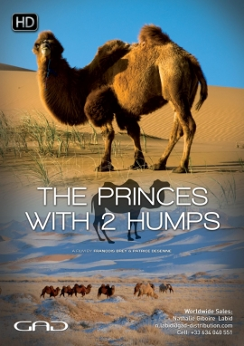

CAMEL-LAND
Home
Genealogy
Geolocalisation
CAMELINI
Camel Bactriane Alxa (Chine)
Camel Bactriane de Perse (Iran)
Camel Bactriane d’Alashan (Chine)
Camel Bactriane Galbiin Gobiin Ulaan (Mongolie)
Camel Bactriane Gobi mongol (Mongolie)
Camel Bactriane Heniin Hetsiin Huren (Mongolie)
Camel Bactriane Junggar (Chine)
Camel Bactriane Mandchou (Chine)
Camel Bactriane Qinghai (Chine)
Camel Bactriane Sonid (Chine)
Camel Bactriane Tarim (Chine)
Camel Bactriane Tokhom-Tungalag (Mongolie)
Camel de Crimée
Camel Gobi Mongol
Camel Hybride (Kazakhstan)
Camel Kazakhs
Camel Kzylordinskii (Kazakhstan)
Camel Mandchou
Camel sauvage de Tartarie (Chine)
Camel Uralobukeevskii (Kazakhstan)
Camel Yuzhnokazakhstanskii (Kazakhstan)
Dromedary Afar
Dromedary Aftout (Maroc, Mauritanie, Sahara Occidental)
Dromedary AI-Chaelae
Dromedary AI-Waddah
Dromedary Al-Awark (Arabie Saoudite)
Dromedary Al-Chaelae (Arabie saoudite, Emirats Arabes Unis)
Dromedary Al-Hadhana (Arabie Saoudite)
Dromedary Al-Hamra (Arabie Saoudite)
Dromedary Al-Homor (Arabie Saoudite)
Dromedary Al-Majaheem (Arabie Saoudite)
Dromedary Al-Safrah (Arabie Saoudite)
Dromedary Al-Saheli (Arabie Saoudite)
Dromedary Al-Waddah (Arabie Saoudite)
Dromedary Almajahhim
Dromedary Arabi (Soudan)
Dromedary Arvana (Turkménistan, Kazakhstan)
Dromedary Azarghaf (Niger)
Dromedary Azawak (Niger, Mali)
Dromedary Balouchistani blanc (Pakistan)
Dromedary Bhravi (Pakistan)
Dromedary Bikaneri (Inde)
Dromedary Châambi (Tunisie, Algérie)
Dromedary Dankali (Ethiopie, Erythrée, Djibouti)
Dromedary de l'Aïr (Niger)
Dromedary de Perse (Iran)
Dromedary du Delta du Nil (Egypte)
Dromedary d’Assouan (Egypte)
Dromedary EL-Khawar (Emirats Arabes Unis)
Dromedary Jaisalmeri (Inde)
Dromedary Kharani (Pakistan)
Dromedary Lassi (Pakistan)
Dromedary Majorero (Espagne : î Canaries)
Dromedary Méhari (Algérie)
Dromedary Omani (Emirats Arabes Unis)
Dromedary Raidi (Pakistan)
Dromedary Raigi (Pakistan)
Dromedary Rgueïbi (Mauritanie, Sahara Occidental, Mali)
Dromedary Sahraouie (Algérie, Maroc)
Dromedary Somali (Ethiopie, Somalie, Kenya)
Dromedary Telli des steppes (Algérie)
LAMINI
Llama Classic
Llama Wooly
Llama Silky
Llama Suri
Alpaca Huacaya
Alpaca Suri
Vicuna
CHIMERA
Cama
Huarizo
Nar-maya (Tülu / Turkoman)
Kospak
Kez-nar
Iner-maya (Tülu / Turkoman)
Kurt
Kurt-nar
Camel-Land
Welcome, the aim of this site is to bring together all the existing breeds of camelid and to document them in order to educate you about their species and the role they have played in the evolution of mankind.
Medias
Contact
Do you still have questions about Camelids?
Here are the answers to your questions.
43 minutes
43 minutes

43 minutes